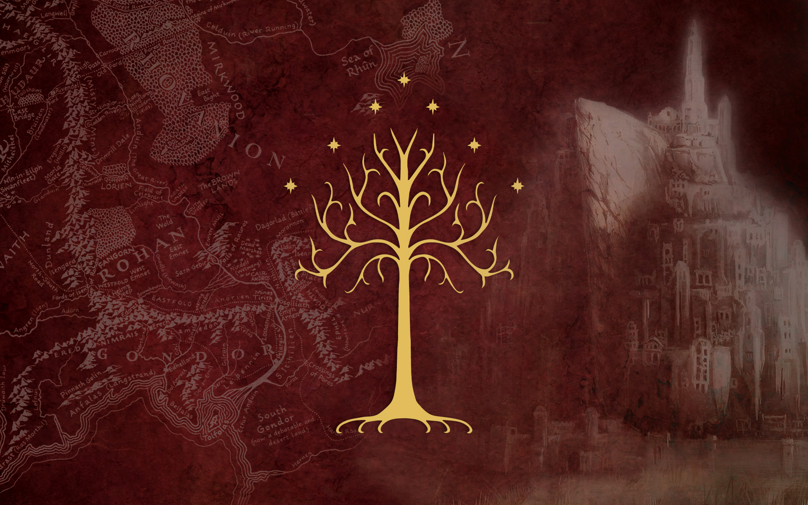

Lord of The Rings

Chronicle Gateway
The White Tree Chronicle
Step into Middle Earth.
From the White City to the farthest wilds of Middle Earth, every story begins here.
All That Is Gold
Does Not Glitter
All that is gold does not glitter,
Not all those who wander are lost;
The old that is strong does not wither,
Deep roots are not reached by the frost.
From the ashes a fire shall be woken,
A light from the shadows shall spring;
Renewed shall be blade that was broken,
The crownless again shall be king.
J.R.R. Tolkien
Chronicle Desk, Fourth Circle Archives
A living archive of the Reunited Kingdom
From the white towers of Minas Tirith to the far roads of Arnor, the Chronicle preserves the living memory of the Reunited Kingdom. In its keeping are set down the words of kings and stewards, the deeds of folk in city and field, and the tidings borne by couriers from distant lands. Thus is gathered all that might otherwise fade with time—deeds of renown, quiet happenings, and whispers of sun and shadow—so that the story of this age may not be lost or forgotten.
The White Tree
A symbol of renewal, memory, and kingship in Gondor.
In the age of the Reunited Kingdom, its image serves as the seal of this Chronicle—marking every record, message, and act of civic communication preserved within these halls.

Chronicle Preview
Festival Fires Shine Beneath the White Tree
At sunrise beneath the gleaming White Tower, trumpets rang across Minas Tirith as King Elessar unveiled a bold decree restoring the ancient highways of Arnor and Gondor. Cheers thundered through the city while merchants flooded the lower circles with rare spices, jeweled fabrics, and treasures carried from distant realms. Rangers returning from Ithilien brought troubling whispers of shadowed creatures prowling the eastern woods, stirring unease among the people. Yet hope burns brightly still — tonight, thousands will gather beneath the blossoming White Tree for a grand festival of song, firelight, and remembrance, as minstrels recount the heroic deeds that forged the Reunited Kingdom...